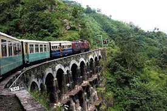

BLOG
Welcome to the blog of TravelMate
Travel Safe With TravelMate
Created:- Nov 2, 2024
Travel agents looking to create packages that include all the bells and whistles that enable their clients to thoroughly discover a destination need look no further than Viator, which offers upward of 80,000+ commissionable shore excursions, tours and attractions to thousands of global destinations. For agents seeking to enhance their clients’ cruise experiences, Viator can help make the best use of their time in port. Its team of travel experts handpicks excursions in the destinations visited.
World's fastest-growing tourism destinations
Created:- nov 2, 2024
The United Nations World Tourism Organization (UNWTO) has revealed the fastest growing tourism destinations so far in 2017 -- and the results might surprise you. Here are the top 10.

TravelMate
"Welcome to TravelMate, your trusted platform for affordable travel solutions. We provide expert recommendations and ensure a safe, seamless journey, helping you make the most of every trip while staying within budget."
Popular Posts
-

Manali
Popularly known as the City of Gates, Aurangabad is among the prominent historical places to visit near Pune. The city was founded in 1610 AD by Malik Ambar, The areas around Aurangabad were under the control of Delhi Sultanates, Bahamani Sultans, Nizam Shahis, Mughals, and Hyderabad Nizams. With the capture of Daulatabad by Mughals in 1633 AD, the Nizam Shahi dominions, including Fatehnagar, came under the possession of the Mughals. In 1653 when Prince Aurangzeb was appointed the viceroy of the Deccan for the second time, he made Fatehnagar his capital and called it Aurangabad. -
Shirdi
Shirdi is home to the shrine of Shirdi Sai Baba, which is the main attraction for the devotees as part of Shirdi tour packages. Sai Baba, who belonged to the 20th century, is known as one of the greatest saints of India. Sai Baba visited Shirdi when he was 16 years old and stayed there until he died in 1918. Sai Baba transformed this small village into a holy pilgrimage site for his devotees. This is one of the must include places in Maharashtra tour packages.
-

Mahabaleshwar
Perched at an altitude of 1,353 m in the Western Ghats of Maharashtra, Mahabaleshwar is one of the popular hill stations in Maharashtra, and among the best places to visit near Pune & Mumbai. It is about 123 km from Pune, and 243 km from Mumbai. It is one of the must include places in Maharashtra tour packages.
Tags
Travel New York London IKEA NORWAY DIY Ideas Baby Family News Clothing Shopping Sports Games